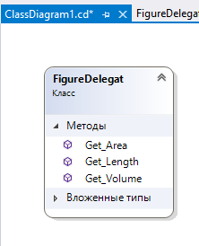
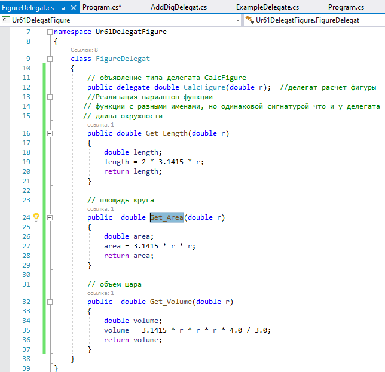
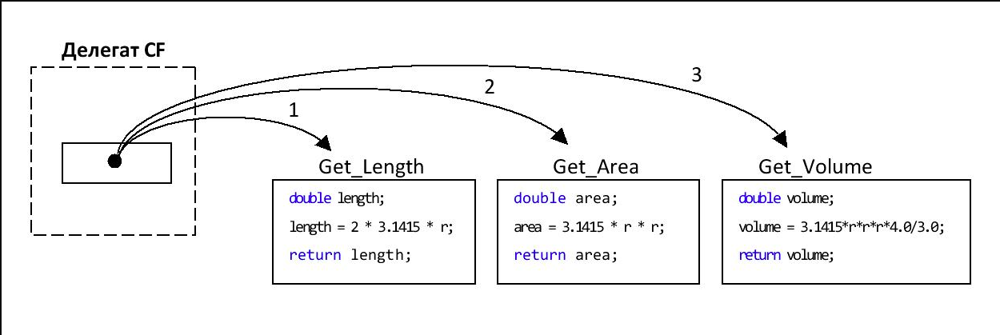

1. Условие задачи
В приложении объявить тип делегата, который ссылается на метод. Требования к сигнатуре метода следующие:
- метод получает входным параметром переменную типа double;
- метод возвращает значение типа double, которое есть результатом вычисления.
Реализовать вызов методов с помощью делегата, которые получают радиус R и вычисляют:

Методы должны быть объявлены как статические (с использованием ключевого слова static).
2. Размышления
Для работы программы выбираем такие имена:
- название типа делегата – CalcFigure;
- название делегата (экземпляра объекта) – CF;
- название метода, который вычисляет длину окружности – Get_Length();
- название метода, который вычисляет площадь круга – Get_Area();
- название метода, который вычисляет объем шара – Get_Volume().

3. Решение (фрагменты кода)
1. Объявление типа делегата
Тип делегата объявляется в некотором классе. Это может быть, например, класс FigureDelegat.
В классе нужно объявить тип делегата с именем CalcFigure в соответствии с условием задачи. Фрагмент такого объявления приведен ниже:
// объявление типа делегата CalcFigure delegate double CalcFigure(double r);

2. Объявление методов в классе
Методы в классе объявляются как статические с ключевым словом static.
// объявление статических методов в классе Функция (метод), добавляемая к делегатам, должна иметь тот же тип и сигнатуру, что и делегат; // длина окружности public static double Get_Length(double r) { double length; length = 2 * 3.1415 * r; return length; } // площадь круга public static double Get_Area(double r) { double area; area = 3.1415 * r * r; return area; } // объем шара public static double Get_Volume(double r) { double volume; volume = 3.1415 * r * r * r * 4.0 / 3.0; return volume; }
3. Демонстрация вызова методов с помощью делегата
Демонстрация вызова методов с помощью делегата из другого программного кода,

На рисунке 3 схематично изображена работа делегата CF.

Рис. 3. Делегат CF